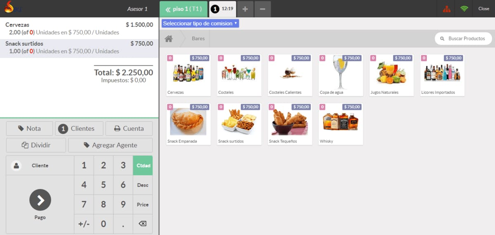
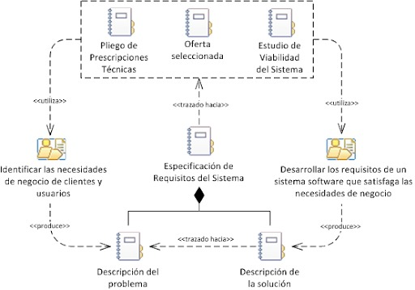

Introduction
proposito
Este documente tendrá información referente a todo lo que se planea con el
sistema,
además de esto el documento servirá como introducción para que los usuarios puedan
presenciar
todo lo que se pueda mostrar referente al sistema y todos los servicios que se presentarán al
usuario.

Ambito del Sistema
Sistema de organización de bares
este sistema se realizara para la organización de un bar, este sistema se encargara de ayudar a: la creación de inventarios de mercancía, la gestión de las mesas disponibles, la creación de un menú digital y la gestión de pagos de los comensales. este sistema no esta pensado para la gestión de pagos para los empleados.
Este sistema va ayudar a los empleados a a poder gestionar los inventarios, las mesas y los pagos de un manera mas eficiente y rápida, con este sistema podrá contratar a la cantidad justa de empleados y distribuirlos de una manera mas eficiente, gracias a esto los empleados pueden gestionar su tiempo a otras actividades y duplicar la eficiencia del bar, esto quiere decir que su bar podrá atender a mas clientes con menos empleados, dirigiendo la atención de los empleados a ofrecer un mejor servicio.
Escogimos la especificación iee830 porque Este documento presenta el conjunto de características necesarias para la obtención de una buena especificación de requisitos.
Definiciones, Acrónimos y Abreviaturas
Requisito:
Es la descripción de los servicios y restricciones.
Funcionalidad:
Descripción de lo que el software debe hacer.
Interfaces Externas:
Cómo debe interactuar el sistema con las personas, el sistema de hardware, o con otros sistemas (software y hardware).
Rendimiento:
Indicación de la velocidad, disponibilidad, tiempos de respuesta, tiempos de recuperación, tiempos de determinadas funciones.
Cliente/Usuarios:
Son todas las personas quienes hacen uso de los servicios.
SIGERMUL – ERS:
Especificación de Requerimientos del Sistema de Gestión de Recorridos MULTIORO.
Administrador:
persona coordinadora de todo el sistema software y que se
encarga de las funciones de mantenimiento de la BD de la aplicación
“Frutaware”.
Empleado:
persona encargada de utilizar el sistema para realizar las
operaciones que a la empresa le interesa que sean automatizadas.
Cliente:
persona que requiere del buen funcionamiento del sistema para
que sea atendida de manera rápida y eficiente.
Servidor:
equipo de cómputo del establecimiento en el que el sistema
será implementado.
Abreviaturas:
IEEE: Institute of Electrical and Electronics Engineers.
ERS: Especificación de Requisitos Software.
BD: Base de Datos.

Visión General del Documento
este es el primer item de la Especificacion de Requisitos Software(ERS), poco a poco iremos tocando los otros items (descripción General, requisitos especificos y apendices)